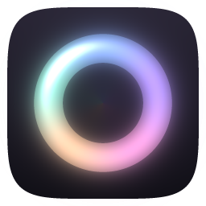
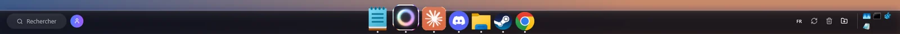
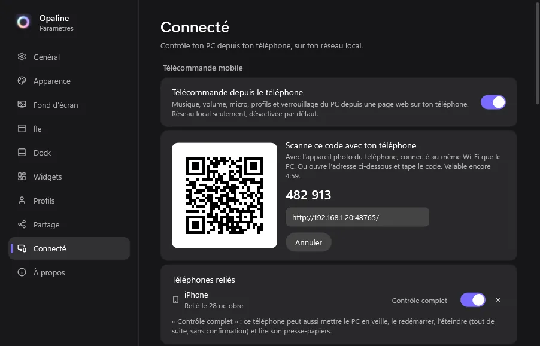
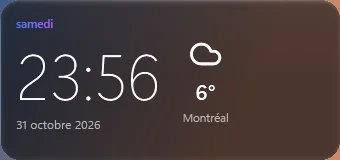
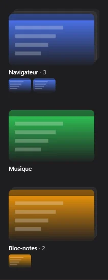

Opaline
Une île en verre d'opale en haut de l'écran, un dock façon macOS et plein de petits outils autour. Pour Windows.
Dernière version sur GitHub · gratuit · open source (MIT)
Aperçu de l'île

Ce qu'elle fait
Tout est optionnel : active seulement ce qui te sert.
-
Verre opalin
Un style unique : verre laiteux teinté de ta couleur, reflets irisés qui suivent la souris, balayage nacré. Trois intensités au choix.
-
L'île
Heure, musique, calendrier, minuteur et Pomodoro, contrôles (volume, luminosité, mode sombre), météo, étagère à fichiers, horloges du monde.
-
Le dock
Façon macOS : grossissement, aperçus des fenêtres, dossiers d'applis, recherche, effet Génie, corbeille et téléchargements.
-
Presse-papiers + coffre
Historique de ce que tu copies (textes, liens, images), épingles, et un coffre chiffré par Windows pour tes identifiants.
-
Notes
Des notes rapides dans l'île, avec cases à cocher, couleurs et épingles ; chiffrées si tu veux.
-
Stage Manager
La fenêtre active au centre, les autres en miniatures vivantes sur le côté ; un clic pour échanger.
-
Concentration
Ne pas déranger, veilleuse contre la lumière bleue et résumé de ta semaine (temps d'écran, jeu, Pomodoros).
-
Widgets des potes
Horloge, météo, musique, stats sur le bureau, et des widgets créés par tes amis, sans code à exécuter.
-
Télécommande
Depuis ton téléphone, sur ton réseau local : musique, volume, micro, applis, pavé tactile, clavier, envoi de fichiers.
-
Amis en ligne
Vois qui a Opaline et à quoi il joue, avec codes d'ami mutuels et mode invisible. Désactivé par défaut.
-
Assistant IA
Pose une question à Claude depuis l'île ou la palette, avec ton forfait Claude Code ou ta propre clé API.
-
Thèmes et fonds
Verre liquide, couleurs tirées du fond d'écran, fonds dessinés par l'app, fond animé, thèmes saisonniers, thèmes .opaline à s'échanger.
-
Profils et automatisations
Profils Perso, Gaming, Études… mode Gaming automatique et règles « Quand… alors… » (jeu lancé, heure, casque branché).



Télécharger
Dernière version sur GitHub · gratuit · open source (MIT)
Télécharger Opaline-Setup.exeEmpreinte SHA-256 :
Configuration requise
- Windows 11 ou Windows 10 (version 2004 ou plus récente)
- PC 64 bits (x64)
- Pas besoin de droits administrateur ni d'installer .NET : tout est inclus
Installer
- Télécharge Opaline-Setup.exe.
- (Conseillé) Vérifie son empreinte, voir plus bas.
- Lance-le. Si Windows affiche « Windows a protégé votre ordinateur », clique Informations complémentaires puis Exécuter quand même.
- Un petit assistant t'aide à choisir ton profil, ta couleur et ce que tu veux afficher.
Est-ce que c'est sûr ?
Le code est-il public ?
Oui. Tout le code est sur GitHub, sous licence MIT : n'importe qui peut lire exactement ce que fait l'app, et la compiler soi-même.
Comment vérifier l'installeur ?
Chaque version publie l'empreinte SHA-256 de Opaline-Setup.exe (dans les notes de la version, dans le fichier Opaline-Setup.exe.sha256 et à côté du fichier sur GitHub).
- Dans le dossier du fichier téléchargé, ouvre PowerShell et tape
Get-FileHash .\Opaline-Setup.exe: l'empreinte doit être exactement la même. - Ouvre le lien VirusTotal des notes de la version (ou dépose le fichier sur virustotal.com) : environ 70 antivirus l'analysent. 0 ou 1 détection « générique » sur un fichier non signé est courant ; plusieurs détections nommées = ne l'installe pas.
Pourquoi Windows avertit-il (SmartScreen) ?
L'installeur n'est pas signé : un certificat coûte de l'argent chaque année, et même signé, Windows avertit tant que le fichier n'a pas été téléchargé par beaucoup de monde. L'avertissement dit seulement « éditeur inconnu », pas « virus ». Pour continuer : Informations complémentaires → Exécuter quand même.
Qu'est-ce que l'app ne fait jamais ?
Pas d'injection dans d'autres programmes, pas de lecture du clavier en continu, pas de pub, pas de pistage. Elle suit les fenêtres ouvertes (pour le dock) avec l'API officielle de Windows et n'utilise les droits administrateur que pour 2 choses, toujours après ta confirmation : la règle du pare-feu de la télécommande et la préparation du réveil à distance. Tout ce qui change Windows est désactivé par défaut et se remet comme avant.
Qu'est-ce qui part sur Internet ?
- La météo et la recherche des villes (Open-Meteo).
- La vérification des mises à jour (GitHub).
- Seulement si tu les actives : Discord (qui parle dans ton salon), ta présence au serveur des amis, tes questions à l'assistant IA (à Anthropic, quand tu en poses une).
La télécommande reste sur ton réseau local « Privé », reliée par un code à usage unique.
Comment la désinstaller ?
Paramètres Windows → Applications → Opaline → Désinstaller. Windows revient comme avant : barre des tâches, fond d'écran, couleur d'accent, thème, curseur et règle du pare-feu. L'assistant te demande ensuite si tu veux aussi effacer tes réglages.
Et si quelque chose ne va pas ?
Garde Maj enfoncée en lançant Opaline pour le mode sans échec. Si un morceau de l'app plante, il s'arrête tout seul et le reste continue ; la barre des tâches revient toujours. Paramètres → À propos → Donner mon avis / Signaler un bug, ou Exporter un rapport de bug (sans données personnelles).